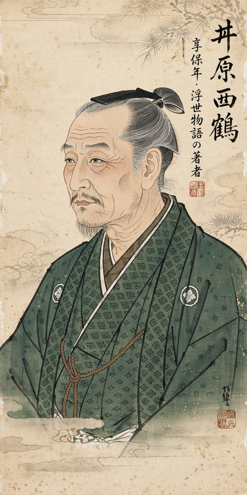

Ihara Saigaku (Japanese: 井原 西鶴; 1642 – 9 September 1693) was a Japanese poet and prose writer of the early Edo period, the creator of the ukiyozōshi ("books of the floating world") genre and one of the most popular authors of his age. An Osaka townsman (chōnin), he turned from haikai poetry — in which he was famed for marathon feats of composition — to prose fiction with The Life of an Amorous Man (1682), chronicling with wit and realism the merchants, courtesans, and samurai of Japan's pleasure quarters and counting-houses.
| Ihara Saigaku | |
|---|---|
 Saigaku, portrait | |
| Born | 1642, Osaka, Japan |
| Died | 9 September 1693 (aged 51), Osaka, Japan |
| Occupation | Poet, novelist |
| Genre | Ukiyozōshi; haikai poetry |
| Notable works | The Life of an Amorous Man; The Life of an Amorous Woman; The Japanese Family Storehouse |
Saigaku was born Hirayama Tōgo, the son of a prosperous Osaka merchant family engaged in the brokerage business. He began composing haikai at fifteen and became a leading master of the Danrin school, which prized speed and wit; legend holds that in a single day and night in 1684 he composed 23,500 verses, an unsurpassed feat of improvisation. His wife died young and his children also predeceased him; in 1677 he shaved his head — though he remained very much a man of the world — and took the literary name Saigaku. He devoted his last decade to prose.
The Life of an Amorous Man (Kōshoku Ichidai Otoko, 1682) follows Yonosuke, heir to a fortune, through 54 chapters tracking the ages of his erotic career from precocious childhood to a final, fantastic voyage to an island of women. The Life of an Amorous Woman (1686) gives the mirror image: the confession of an aging former courtesan recounting her descent through every station of the pleasure world. Five Women Who Loved Love (1686) and The Great Mirror of Male Love (1687), on homosexual love among samurai and kabuki actors, complete his great quartet on kōshoku ("passion").
Saigaku turned the same realism on commerce in The Japanese Family Storehouse (1688), a mosaic of tales about how fortunes are made and lost, and The Eternal Storehouse of Japan, celebrating merchant ingenuity while satirizing miserliness and folly. His samurai tales and miscellanies (Saigaku's Various Writings) round out a corpus that maps an entire urban society.
Saigaku wrote in a brisk, colloquial prose salted with puns, verse tags, and haikai imagery, selling briskly to the townspeople he portrayed. Long overshadowed by the playwright Chikamatsu Monzaemon, he was rediscovered in the Meiji period and is now ranked among the founders of the Japanese novel: his episodic realism and eye for money and desire make him a precursor of the modern fiction of everyday life.
From Wikipedia, the free encyclopedia (recreated from memory).